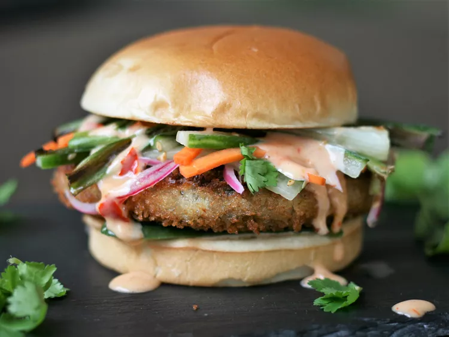

Banana Pudding

Description
Ingredients
- 3/4 cup rice vinegar
- 2 tablespoons water
- 2 teaspoons white sugar
- 2 teaspoons sesame seeds
- 1 small carrot, cut into matchsticks
- 1/4 large English cucumber, cut into matchsticks
- 1/4 small red onion, cut into 1/8-inch thick wedges
Steps
- Whisk together 3/4 cups rice vinegar, water, sugar, and sesame seeds in a small bowl until sugar is dissolved.
- Whisk together mayonnaise, Thai sweet chile sauce, Sriracha, 1 teaspoon rice vinegar, and 1/4 teaspoon salt in a small bowl. Chill Bang Bang Sauce until ready to use.
- Preheat the oven to 400 degrees F (200 degrees C). Line a rimmed baking sheet with aluminum foil.
- Toss mushrooms with 1 tablespoon oil.
- Transfer cooked mushrooms to a food processor,pulsing 5 or 6 times and scraping down the sides of the bowl, until finely minced (or mince with a knife).
- Broil vegetables until charred, turning halfway through, about 10 minutes. Set aside.